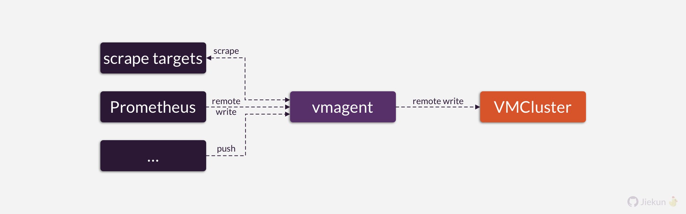
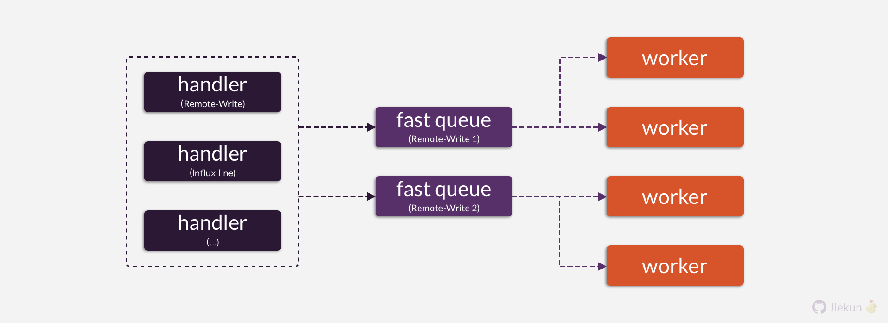
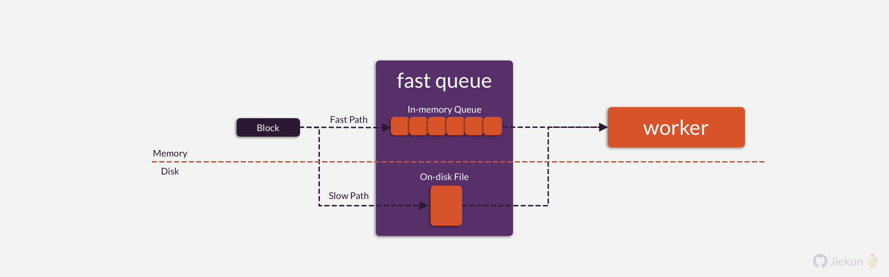
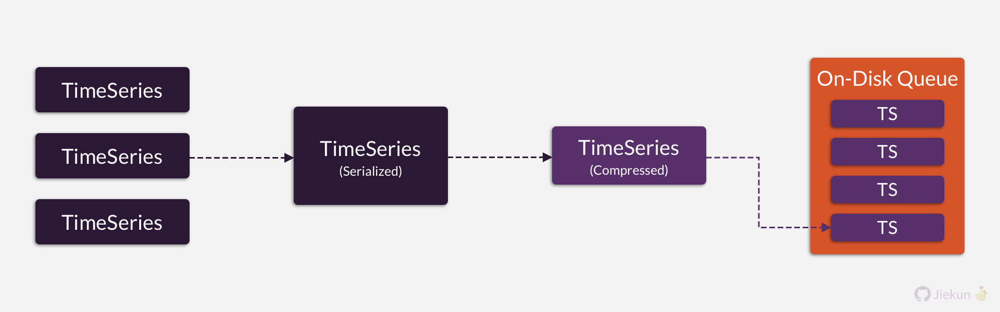

VictoriaMetrics 中的持久化数据结构 (Part 1): vmagent
vmagnet 简介
vmagent 是一个轻量的 Agent，用于像 Prometheus 一样采集应用暴露的指标，或者作为 Receiver 接收 Remote-Write Compatible、InfluxDB line 协议的数据推送。
vmagent 可以对数据进行加工，例如 Relabeling、Sorting。最后将数据 remote write 至 VictoriaMetrics 或其他协议兼容的目标。

FastQueue
现在让我们关注 vmagent 内部，采集到的数据首先会在内存中不断追加给各个 Remote-Write 的对象（图中未画出）。等到积累了一定的数据量或者等待一定的时间间隔（默认 1 秒）后，它们会被 Flush 到一个 Remote-Write 对象持有的 FastQueue。每个 Remote-Write 对象还会持有多个 worker，负责消费 FastQueue 中的数据，推送至 Remote-Write 的地址。

FastQueue 在理想情况下通过 channel 数据结构将数据传递给 worker（这是 Go 语言中很典型的协程间通信），这是完全基于内存的。但 channel 能够缓冲的数据是有限的，如果网络异常，或者 Remote-Write 的目标没有足够能力处理数据，channel 很快就会被填满。
这时候 FastQueue 会选择将数据写入磁盘进行缓冲。

基于这些介绍，我们可以很容易总结出以下要点：
- 一个 Remote-Write 配置对应一个 Remote-Write 对象；
- 一个 Remote-Write 对象持有 1 个 FastQueue 和多个 workers；
- 一个 FastQueue 对应一个
channel和一个磁盘文件（目录）。
On-Disk Data Structure
如果你在本地运行过 vmagent，你可以很容易查看到它为每个 Remote-Write 生成的文件目录。例如：
./vmagent-remotewrite-data
└── persistent-queue
├── 1_E3C1E1E1733E59E4
│ ├── 0000000000000000
│ ├── flock.lock
│ └── metainfo.json
└── 2_740390E5C841CCAC
├── 0000000000000000
├── flock.lock
└── metainfo.json
vmagent 根据 Remote-Write 的配置顺序以及 URL 生成目录名：
...
// Hash value of `URL`. e.g.: E3C1E1E1733E59E4
h := xxhash.Sum64([]byte(URL.String()))
// Index + Hash value. e.g.: 1_E3C1E1E1733E59E4
queuePath := filepath.Join("./vmagent-remotewrite-data", "persistent-queue", fmt.Sprintf("%d_%016X", argIdx+1, h))
...
如果在磁盘上有待消费的数据，且 vmagent 意外退出，那么它在重启时仍然能够读取相同的目录继续进行消费。
每个 Remote-Write 的目录下有 3 个文件，分别是数据文件（0000000000000000）、元数据文件（metainfo.json）和锁（flock.lock）。
其中，元数据文件记录了数据文件的读写偏移量：
{"Name":"2:secret-url","ReaderOffset":0,"WriterOffset":0}
而数据文件中的存放了等待 remote write 的 []byte。要注意的是，他们并不是 Time-Series 数据经过序列化后得到的 []byte。
vmagent 支持 Prometheus 使用的 Snappy 压缩算法，也支持 zstd 压缩算法。vmagent 在启动时会根据启动参数或自动协商确认每个 Remote-Write 需要使用的压缩算法。Remote-Write 数据进入 FastQueue 前，需要：
- 按照 Remote-Write Protocol 序列化成二进制
[]byte； - 使用 Snappy 或 zstd 算法将其压缩成新的
[]byte

最后才会被发送出去或写入本地数据文件。
Further Reading
你可以在以下位置找到关键的代码：
- Presistente queue folder path generation: https://bit.ly/3y2FxEx
- Data compression before writing to FastQueue: https://bit.ly/4dlUeCN
- FastQueue fast path & slow path: https://bit.ly/4aYkD7X
- Remote-Write worker: https://bit.ly/3JLrfL6